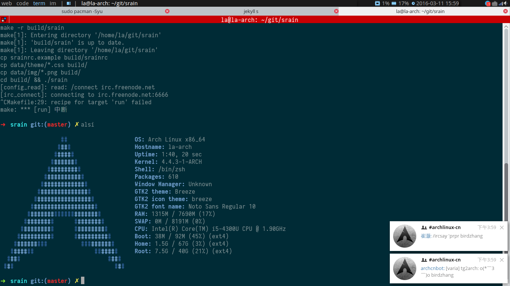

入手 ThinkPad L450#
提示
这是一篇迁移自 Jekyll 的文章，如有格式问题，可到 ⛺ SilverRainZ/bullet 反馈

元宵的时候，我从师兄手里买下了这台机子，全新，i5 4300U，8G内存，256G SSD，14寸 1366x768 屏幕。 只有 SSD 而没有 HDD 这点颇合我意，毕竟我没有囤积资源的癖好，256G 足矣，而且还能省下一笔 HDD 的钱。 机子在 ebay 上是 ￥3200，到手花了 ￥3700，以国内的价格来算还是值得的。
之前用的电脑是 Lenove G455，这台 10 年生产的机器陪伴着我姐走过了四年大学， 又在我的高强度使用下度过了大三上学期，现在它终于可以要退役了。这台电脑除了硬盘有点噪音之外，其实一切都运行良好。 单纯做编程的话其实够用，痛点主要是：
无法用 FlashPlayer 流畅地播放 720P 的视频（当然这和 FlashPlayer 糟糕的性能也有很大关系）；
跑不起最近的 firefox 和 YCM：Gtk3 版的 FF 的 bugs 还是很多， 虽然平时的 UI 响应似乎比 Gtk2 的时候好了一点，但是打开某些网页的时候还是会完全卡住， 而 YCM 则有时会吃掉我 1G-1.5G 的内存，然而我的内存才 3G，实在是不堪重负。
现在一切都没问题了，这样的配置在我这个不太关心硬件的人看来，暂时是够用了。
ThinkPad 的外观比我想象中还要漂亮一些，塑料外壳摸起来很舒服， 机身还算薄（不插上那个凸起的电池的话），键盘手感也不错。 另外崔土豪说屏幕可以 180 度展开，试了一下果然可以！ 说到屏幕…… 1366x768 其实还是低了，仔细看很容易看出像素点来。
机器预装 Windows 7，尽管我已经不用 Windows 好几个月了，但毕竟是个正版系统， 用了这么多年盗版了，还是洗白一下吧。
至此，我使用的全部软件，全都是自由软件 & 正版软件啦！
Win7 可以升级到 10，升级的过程略坎坷，不知道是怪微软的更新服务器好还是怪国内糟糕的网络环境好。 Check Update 一直不动，从官网下载了在线升级器，下完了整个镜像之后死掉了。 最后还是手动从官网下了镜像才装上的。
装完 Windows 后自然就装 Arch Linux 了，还好磁盘格式是 MBR（一直对 GPT 有莫名的恐惧）， 但是机器预装系统的时候已经把四个主分区都占用了 :( ，于是只好把最后的一个不知道是什么的 OS/2 格式的分区删掉， 腾出主分区给 Arch。
在 Arch Wiki 的光芒照耀下， 安装过程一切正常。
装好后尝试了一下 KDE，果然已经不适应了，pacman -Rsc 之，然后回到 XMoand。
趁着重新配置的时候更新了一下配置：
使用 aur/ttf-iosevka 代替
Tsentsiu Mono HG作为编辑器和终端的字体使用 xbindskey 管理快捷键，而不是用 xmoand 的
additionalKeys（听小药壶说可以用 scheme 来写 .xbindskeyrc）使用 terminator 代替 konsole
使用 dzen2 + condy conky 代替 xmobar
需要启动两个 dzen2，一个接受 xmoand 的输出，一个接受 conky 的输出， 需要注意的是 dzen2 不支持 按屏幕的百分比显示， 我在网上找到了这个脚本， 可以从 xrandr 获取屏幕宽度，按指定的比例算出宽度来，我针对我的需要做了一点修改：
#!/usr/bin/sh
# Author: ervandew
# Source: https://github.com/ervandew/dotfiles/blob/master/bin/dzen2
#
# Wrapper around dzen2 that allows width and x to be defined as a screen
# percentage. The percentage width is define via the new '-wp' arg and
# percentage x as -xp, both of which must be supplied before any other dzen
# arguments.
#
# $ dzen2 -wp 30 -xp 60 ...
##
external="^\(VGA\|DVI\|DP\|HDMI\)-\?[0-9]\+"
internal="^\(eDP\|LVDS\)-\?[0-9]\+"
pattern="connected \(primary \)\?\([0-9]\+\)x.*$"
# get internal monitor's width only
# 仅获取笔记本屏幕的宽度
width=$(xrandr 2> /dev/null | grep "$internal $pattern" | sed "s/$internal $pattern/\3/")
# width=$(xrandr 2> /dev/null | grep "$external $pattern" | sed "s/$external $pattern/\3/")
while [ 1 ] ; do
if [ "$1" == "-wp" ] ; then
arg="$arg -w `expr $(expr $width '*' $2) / 100`"
elif [ "$1" == "-xp" ] ; then
arg="$arg -x `expr $(expr $width '*' $2) / 100`"
else
break
fi
shift
shift
done
FG='#aaaaaa'
BG='#1a1a1a'
FONT='-*-terminus-*-r-normal-*-*-110-*-*-*-*-iso8859-*'
cat - | dzen2 $arg "$@" -bg $BG -fg $FG -fn $FONT -e 'button2=;' -xs 1
xmonad.hs 那边要这样写：
myLogHook xmproc = dynamicLogWithPP $ defaultPP
{ ppCurrent = dzenColor "#87ceff" "#1a1a1a" . pad
, ppVisible = dzenColor "#aaaaaa" "#1a1a1a" . pad
, ppHidden = dzenColor "#aaaaaa" "#1a1a1a" . pad
, ppUrgent = dzenColor "#ff0000" "#1a1a1a" . pad
, ppWsSep = " "
, ppSep = " | "
, ppLayout = dzenColor "#87ceff" "#1a1a1a" .
( \x -> case x of
"Tall" -> "^i(" ++ myBitmapsDir ++ "/tall.xbm)"
"Mirror Tall" -> "^i(" ++ myBitmapsDir ++ "/mtall.xbm)"
"Full" -> "^i(" ++ myBitmapsDir ++ "/full.xbm)"
"Simple Float" -> "~"
_ -> x
)
, ppTitle = (" " ++) . dzenColor "white" "#1a1a1a" . dzenEscape . shorten 50
, ppOutput = hPutStrLn xmproc
}
-- NB: dzen2 DOSEN'T support the option `-wp` and `-wx` (p => percentage),
-- I use a shell wrapper from https://github.com/ervandew/dotfiles/blob/master/bin/dzen2
-- {bg,fg}color and font are also set by this wrapper
--
myBitmapsDir = "/home/la/.xmonad/dzen2"
myDzen2Wrapper = "/home/la/.xmonad/start_dzen2.sh"
myXmonadBar = myDzen2Wrapper ++ " -wp 70 -h 18 -x 0 -y 0 -ta l"
myStatusBar = "conky | " ++ myDzen2Wrapper ++" -xp 70 -wp 20 -h 18 -y 0 -ta r"
main = do
xmproc <- spawnPipe myXmonadBar
spawn myStatusBar
xmonad $ defaultConfig {
-- ...
}
启用了 xmonad 的 smartBorder，这样在不需要边框的时候就不会有讨厌的边框了
import XMonad.Layout.NoBorders
myLayoutHook = avoidStruts $ layoutHook defaultConfig
main = do
xmonad $ defaultConfig {
-- ...
layoutHook = smartBorders $ myLayoutHook
-- ...
}
受上面那个 dzen2 wrapper 启发，在
.xinitrc里面增加了判断外接屏幕是否存在的脚本：
# Dual screens auto dectection
internal="^\(\(eDP\|LVDS\)-\?[0-9]\+\)"
external="^\(\(VGA\|DVI\|DP\|HDMI\)-\?[0-9]\+\)"
pattern="connected \(primary \)\?\([0-9]\+\)x.*$"
inter_scr=$(xrandr 2> /dev/null | grep "$internal $pattern" | sed "s/$internal $pattern/\1/")
exter_scr=$(xrandr 2> /dev/null | grep "$external $pattern" | sed "s/$external $pattern/\1/")
# 笔记本屏幕为主显示器
if [ ! -z "$exter_scr" ] ; then
xrandr --output ${exter_scr} --auto --output ${inter_scr} --primary --auto --right-of ${exter_scr}
fi
使用 pacman 来管理 vim 插件（反正肥猫打包了一切
all plugins are managed by pacman
community/vim-nerdtree
community/powerline-vim
community/vim-doxygentoolkit
archlinuxcn/vim-fcitx
archlinuxcn/vim-youcompleteme-git
最后再贴一张图：

如果你有任何意见，请在此评论。 如果你留下了电子邮箱，我可能会通过 回复你。